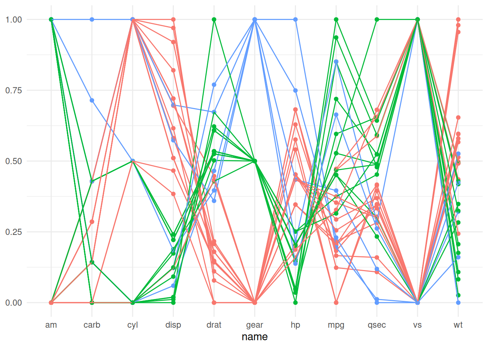
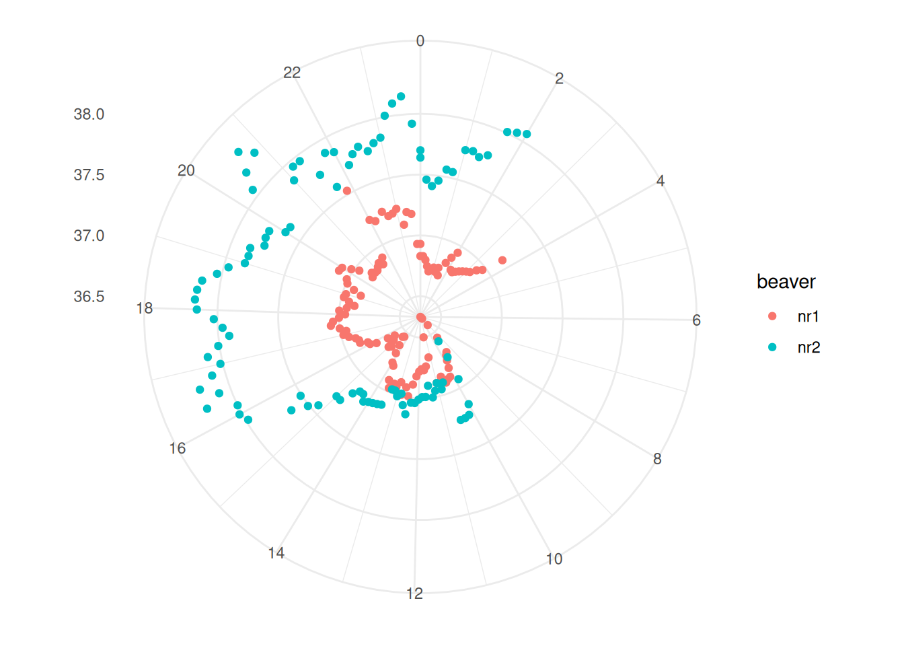
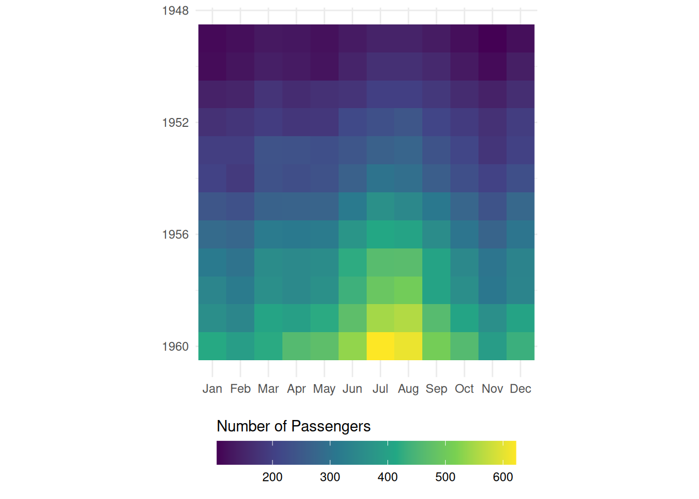

Infovis 2: Exercise B (Optional)
In this exercise, we’ll recreate some of the more advanced or specialised plots from the lecture. For this purpose, we’ll use datasets that are already integrated into R. You can find a list of these datasets here or with the help ?datasets.
We’ll continue to use ggplot2, but with a few tricks.
Task 1: Parallel Coordinate Plots
Create a parallel coordinate plot. For this, the integrated dataset mtcars is suitable. Extract the vehicle names with rownames_to_column.
Also, the values need to be normalised to a common scale. For this, you can use the function scales::rescale.
Here’s what the finished plot looks like:
Task 2: Polar Plot with Beaver Data
Polar plots are suitable for data of a cyclical nature, such as time-stamped data (daily, weekly, or annual rhythms). From the example datasets, I found two datasets that are time-stamped:
Both datasets need to be reshaped a bit before we can use them for a radial plot. In task 2, we’ll use the beaver datasets, and in task 3 we’ll use the passenger datasets.
If we want to use the data from both beavers, we need to merge them.
We also need to make some adjustments to the time data. According to the dataset’s description, time has been recorded in a format that isn’t very intuitive for programming purposes. For instance, 3:30 has been recorded as “0330”. To make this data more manageable, we’ll need to convert this time format into a decimal system.
Here’s what the finished plot should look like:

Task 3: Grid Visualisation with Air Passengers
Similar to task 2, this time we’ll use the AirPassengers dataset.
The AirPassengers dataset is in a unique format. At first glance, it might seem like a data.frame or a matrix. However, it’s actually a ts class object
Sample Solution
AirPassengers
class(AirPassengers)To use this dataset, we first need to convert it into a matrix. I learned how to do this here.
Sample Solution
AirPassengers2 <- tapply(AirPassengers, list(year = floor(time(AirPassengers)), month = month.abb[cycle(AirPassengers)]), c)
AirPassengers2We also need to convert the matrix into a dataframe, and to transform the wide table into a long table.
Sample Solution
AirPassengers3 <- AirPassengers2 |>
as.data.frame() |>
tibble::rownames_to_column("year") |>
pivot_longer(-year, names_to = "month", values_to = "n") |>
mutate(
# I use a simple trick to convert spelled-out months into numbers
month = factor(month, levels = month.abb, ordered = T),
month_numb = as.integer(month),
year = as.integer(year)
)Here’s what the finished plot looks like:
